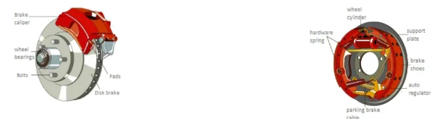
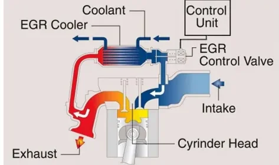
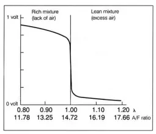

Vehicle Subsystems¶
A modern vehicle is a collection of cooperating subsystems: the brakes and their electronic assistants, the charging and starting hardware, the exhaust after-treatment chain, the valve train, the transmission, and the drive layout. This lesson tours each of them so that, later in the bootcamp, you understand what the ECUs you will test and calibrate are actually controlling. The focus is on the physical principle of each subsystem and on how the electronic control layer sits on top of the mechanics.
Braking system¶
Drum brakes and disk brakes¶
Both designs convert the driver's pedal force into friction that slows the wheel, but they do it differently:
| Disk brake | Drum brake | |
|---|---|---|
| Principle | Caliper squeezes pads against a rotating disk | Shoes are pushed outward against the inside of a rotating drum |
| Actuation | Hydraulic pressure presses the pads with a force proportional to pedal effort | Wheel cylinder pushes the friction-coated shoes against the drum |
| Typical use | Front axle (most of the braking work), increasingly all four wheels | Rear axle of smaller cars; also integrates the parking brake cable |
| Behavior | Better heat dissipation and fade resistance | Self-energizing effect, cheap, good as a parking brake |

The hydraulic circuit is what translates pedal travel into clamping force: the pressure of the brake fluid in the circuit rises with pedal effort, so the force on the pads stays proportional to what the driver requests.
Oversteer and understeer¶
Two terms describe how a car deviates from the trajectory the driver intends in a curve, and they matter because the electronic stability systems below exist to correct exactly these behaviors:
- Oversteer — the car turns tighter than intended; the rear axle loses adhesion and the tail steps out, which can lead to a spin if uncorrected.
- Understeer — the car runs wider than intended; the driver must lift off and straighten the steering momentarily to get back on line. It is more common on front-wheel-drive cars driven fast through a curve, or when the front wheels lock under braking.
ABS — Antilock Brake System¶
A locked wheel cannot steer: it slides, and the tire's grip collapses. ABS exists to keep the wheels at the edge of locking instead of beyond it.
Each wheel carries a speed pickup — a toothed phonic wheel (an angular position transducer) read by an inductive proximity sensor. The ABS control unit computes the rotational speed of every wheel from these signals. When it detects that one or more wheels are decelerating far faster than the vehicle can physically slow down — the signature of an imminent lock — it modulates the hydraulic pressure to that wheel's brake, releasing and re-applying it many times per second, while the driver keeps full braking and steering authority.
sequenceDiagram
participant W as Wheel speed sensor
participant ECU as ABS control unit
participant H as Hydraulic modulator
participant B as Wheel brake
loop Continuous monitoring
W->>ECU: wheel speed signal
end
ECU->>ECU: detect wheel locking
loop Until grip is restored
ECU->>H: reduce / hold / rebuild pressure
H->>B: modulated brake force
W->>ECU: wheel speed recovers
endABS shortens the path to safety, not always the stopping distance
The main benefit of ABS is that the wheels keep rolling, so the car remains steerable during emergency braking — the driver can brake and swerve. On some surfaces (gravel, deep snow) stopping distance can even increase, but the vehicle stays controllable.
EBD — Electronic Brakeforce Distribution¶
The load on each wheel during braking is never equal: weight transfers forward, so the rear wheels unload and have less grip on the asphalt. If they receive the same brake force as the front, they lock first — and a locked rear axle destroys the car's directional stability and can make it spin.
EBD uses the ABS hardware (wheel speed sensors and the hydraulic modulator) to apportion brake force between the axles. It lightens the braking force on one or both rear wheels — especially in corners, where the inner rear wheel is most unloaded — so that lock-up is avoided at the axle that can least afford it. Think of it as ABS logic applied preventively to the brake balance, rather than reactively to a locking wheel.
ESC — Electronic Stability Control¶
ESC (Bosch markets it as ESP, Electronic Stability Program; other manufacturers use names such as DSC) is the system that fights oversteer and understeer directly.
When the car starts to skid — the measured yaw behavior no longer matches what the steering angle implies the driver wants — ESC intervenes on two channels at once:
- Engine torque reduction — the control unit asks the engine management to cut power.
- Selective braking — individual calipers are applied with different intensity, creating a corrective moment that pulls the car back onto the intended attitude.
TCS / ASR — Traction Control System¶
Traction control is the acceleration-side counterpart of ABS: it prevents the drive wheels from spinning when the driver asks for more torque than the surface can transmit — typical on rain-soaked or icy pavement, or whenever one wheel loses traction.
Using the same wheel speed sensors as ABS, the controller identifies a spinning wheel and intervenes, depending on the system design, on one or both of:
- the brake of the spinning wheel, so torque is effectively redirected to the wheel with grip,
- the engine power output, reducing torque until traction is restored.
Hill Holder¶
Hill Holder solves a small but real problem: when starting from a standstill on an uphill grade, it keeps the brakes applied during the gap between the driver releasing the brake pedal and the engine delivering enough torque to move off, so the vehicle does not roll backwards.
How the braking assistants fit together¶
| System | Situation it handles | Actuators used |
|---|---|---|
| ABS | Wheels locking under braking | Hydraulic brake pressure per wheel |
| EBD | Unequal axle loading, rear lock-up (especially in curves) | Hydraulic brake pressure per wheel |
| ESC | Skidding, oversteer/understeer | Individual brakes and engine torque |
| TCS/ASR | Drive wheels spinning under acceleration | Brake of spinning wheel and/or engine torque |
| Hill Holder | Rolling back on hill starts | Brake hold |
One hardware platform, many functions
ABS, EBD, ESC, TCS and Hill Holder share the same sensors (wheel speed), the same hydraulic modulator and largely the same ECU. When you test one of them on a HIL rig or in the vehicle, you are really testing the whole braking-control platform from different functional angles.
Charging and starting¶
The alternator — and the Smart Alternator¶
The alternator's job is to keep the battery charged: the battery is needed to start the engine and to power every electrical function on board. The alternator produces alternating current, and since AC cannot be stored, a rectifier bridge converts it to DC so the battery can accumulate it.
A classic alternator draws mechanical power from the engine almost constantly. A Smart Alternator (SAM) instead varies how much power it takes from the engine depending on the vehicle's running state — for example charging aggressively during deceleration (recovering energy that would otherwise become heat in the brakes) and backing off during acceleration, when all engine power should go to the wheels. This saves fuel, at the cost of much tighter integration between the alternator, the battery sensor and the engine ECU.
The starter motor¶
An internal combustion engine cannot start itself: it must first be cranked to a rotational speed high enough for the combustion cycle to become self-sustaining. The starter motor does this. It is an electric motor that absorbs current from the battery and is mechanically coupled to the engine shaft to spin it up; once the engine fires and runs on its own, the starter disengages.
Emission-control subsystems¶
Exhaust after-treatment is a chain of devices, each targeting specific pollutants. Understanding which device does what — and what the ECU measures to control it — is essential before you ever look at a diagnostic trouble code in this area.
EGR — Exhaust Gas Recirculation¶
EGR takes a small portion (typically 5–15%) of the exhaust gas and routes it from the exhaust manifold back into the intake manifold, where it is aspirated into the cylinders with the fresh charge.
The recirculated gases are burnt and inert: they do not participate in combustion. That is precisely the point — they dilute the combustible mixture, which lowers the peak combustion temperature, and lower peak temperatures sharply reduce the formation of nitrogen oxides (NOx). The trade-off is a reduction in the power the cycle can deliver.

The engine control unit drives the EGR valve with a PWM signal: by varying the duty cycle it regulates exactly how much exhaust gas is recirculated for the current operating point. Many systems add an EGR cooler (a small heat exchanger fed by engine coolant) to drop the recirculated gas temperature, which improves the NOx reduction further.
The lambda probe — closed-loop mixture control¶
The lambda probe (oxygen sensor) measures the oxygen concentration in the exhaust gas by comparing it against the oxygen in the ambient air at the other end of the sensing element. From that, the ECU indirectly knows how much air is in the exhaust — and therefore whether the mixture burnt rich or lean.
The measured quantity is the air/fuel ratio expressed as λ (lambda):
| λ value | Mixture |
|---|---|
| λ = 1 | Stoichiometric combustion — exactly the air needed to burn all the fuel |
| λ < 1 | Rich — fuel excess (lack of air) |
| λ > 1 | Lean — air excess |
The probe reports this to the engine ECU as an electrical signal, and the ECU uses it in a feedback loop to correct the amount of fuel injected into the combustion chamber, hunting continuously around λ = 1 on petrol engines.

Three probe technologies exist:
- Zirconium dioxide probe — the sensing element's outer surface is exposed to the exhaust gas while its inner surface sees the atmosphere; the element generates a voltage that jumps across the stoichiometric point.
- Titanium dioxide probe — does not generate a voltage itself; a bias voltage is applied and the resulting output current varies with the oxygen concentration.
- Double lambda probe (one upstream and one downstream of the catalyst) — a single narrow-band probe gives only a two-stage signal (oxygen present or absent), so with one sensor the ECU must constantly correct injection and ignition to stay near stoichiometric. Adding a second probe downstream gives a more truthful sampling, lets the ECU monitor catalyst health, and makes the system more robust as the sensors' sensitivity drifts with aging.
The catalytic converter¶
The catalytic converter sits in the exhaust line and promotes the chemical completion of combustion: oxidation and reduction reactions that convert the harmful exhaust gases into less harmful ones. It works best in a temperature window of roughly 180–380 °C and, together with the silencer, also contributes to reducing exhaust noise.
There are three families of catalyst:
| Type | Also called | Acts on | Chemistry | Used on |
|---|---|---|---|---|
| Reducing | One-way | NOx | Rhodium (Rh) reduces nitrogen oxides to oxygen and nitrogen | Diesel engines |
| Oxidizing | Two-way / bidirectional | CO and unburnt hydrocarbons (HC) | Platinum and/or palladium oxidizes CO and HC | Spark-ignition engines |
| Three-way | Trivalent | NOx, CO and HC | A reducing stage followed by an oxidizing stage | Petrol/gas engines run at stoichiometric with lambda control |
The three-way catalyst only works near λ = 1 — which is exactly why petrol engines pair it with closed-loop lambda control. Diesel engines run lean, so they need the separate devices described next.
DPF — Diesel Particulate Filter¶
The DPF physically traps fine particulate matter (soot) from diesel exhaust. It is combined with a pre-catalyst: exhaust gas collected from the manifold passes through the pre-catalyst, then through the filter itself, and continues towards the downstream exhaust components and the outlet.
Because trapped soot accumulates, a diagnosis and management software in the ECU continuously monitors the filter's state — loading, pressure drop, temperature — to guarantee correct operation and to manage the filter's maintenance (the regeneration events that burn the stored soot off). When you later meet DPF-related diagnostic trouble codes, they come from exactly this monitoring software.
SCR — Selective Catalytic Reduction¶
SCR is the diesel answer to NOx. A reducing agent — in practice a urea solution (AdBlue), which decomposes to ammonia — is injected into the exhaust stream upstream of a dedicated catalyst. On the catalyst surface the reductant reacts with the nitrogen oxides and converts them to harmless nitrogen and water.
The subtle engineering point of SCR is the catalyst selectivity: it must make NO react with the available oxygen and not consume the ammonia (NH3) unproductively. SCR systems are common both in industrial combustion plants and in automotive diesel applications, and they add their own sensors (NOx sensors, tank level, dosing quality monitoring) that you will see in diagnostics.
How the chain fits together¶
flowchart LR
ENG["Engine"] --> EXH["Exhaust manifold"]
EXH -.->|"5-15% recirculated"| EGR["EGR valve + cooler"]
EGR --> INT["Intake manifold"]
INT --> ENG
EXH --> PRE["Pre-catalyst"]
PRE --> CAT["Catalytic converter"]
CAT --> DPF["DPF (diesel)"]
DPF --> SCR["SCR + urea dosing (diesel)"]
SCR --> SIL["Silencer / outlet"]
LAM["Lambda probe(s)"] -.->|"O2 feedback"| ECU["Engine ECU"]
ECU -.->|"PWM duty cycle"| EGR
ECU -.->|"injection correction"| ENGPetrol engines center on the lambda-controlled three-way catalyst; diesels add the DPF and SCR stages. EGR serves both by reducing NOx formation in the cylinder in the first place.
Valve timing¶
Fixed versus variable timing¶
In a four-stroke engine, the valve timing defines when each valve opens and closes relative to the crankshaft position. The camshaft is synchronized to the crankshaft — via a chain, a belt, or gears — and the cam profiles fix the opening points.
With fixed timing, the camshaft is a simple component with fixed lobe geometry: the phasing is constant, the opening and closing moments never advance or retard with engine speed, and the engine behaves the same way at every rpm — a compromise tuned for one operating region.
With variable valve timing (VVT), the valve events shift as engine speed changes. The benefit is that performance, fuel consumption and emissions can each be optimized in their own operating region instead of compromising on one. It also allows a dual character for the engine: below a certain rpm or electronic setting it stays "smooth" and economical; above it, the strategy switches to a performance-oriented phasing.
Mechanisms used to vary the timing¶
| Mechanism | What it does |
|---|---|
| Camshaft rotation (phaser) | Rotates the whole camshaft relative to its drive gear — shifts the timing without changing its amplitude |
| Double toothed gear | A gear interposed inside the drive gear slides along the shaft, changing the phasing |
| Cam effect variation | Changes how the cam lobe acts on the poppet valve, varying both lift amplitude and opening duration |
| Double cam | Two cams with different profiles per valve; a switchable element between lobes and valves selects the milder or wilder profile |
| Rocker arm | A single cam acts through a rocker arm whose geometry is modulated by a second lobe system, amplifying or reducing the lobe effect |
| Disengageable cams | Cams slide along the camshaft under electronic control; valves can be locked closed, letting the engine run on fewer cylinders (cylinder deactivation) |
Almost every manufacturer has a branded implementation: Alfa Romeo's phase variator (the first on a production car), Toyota's VVT and VVT-iE, Honda's VTEC (including 3-stage VTEC), Mitsubishi's MIVEC, Porsche's VarioCam and VarioCam Plus, Nissan's VVL/N-VCT/CVTC/VVEL, BMW's VANOS and Valvetronic, Subaru's AVCS, Mazda's S-VT, Ford's VCT, Rover's VVC, Fiat's VFD and Multiair, and Daimler's CamTronic. Some systems additionally allow valves to stay shut by sliding the cams along the shaft — the basis of cylinder shut-off.
Multiair — electro-hydraulic valve control¶
Multiair is Fiat's valve-opening control system (developed from 2002, first seen on a production FIRE engine in 2009) for petrol and diesel engines. Its ambition is to give a cam-driven engine the flexibility of a camless one.
In a conventional engine, the cam profile rigidly dictates the valve's opening and closing law; even with a phase variator you can only shift that fixed law within a restricted, rpm-dependent range. Multiair breaks this rigidity hydraulically:
- The tappet between cam and valve is built as two rigid elements joined by a pumping chamber filled with oil, with an electronically controlled valve on the chamber.
- Valve of the chamber closed: the oil column is rigid, and the tappet follows the cam's profile exactly — full, conventional lift.
- Chamber valve opened at the right moment: oil escapes from the chamber, the tappet collapses against its spring, and the valve either never reaches full lift or closes earlier than the cam would dictate.
- If more power is suddenly requested, the control valve closes again, the oil is trapped, and the engine can exploit whatever cam profile remains — though the lift lost while oil leaked away cannot be recovered within that cycle.
Because the ECU commands the chamber valve cycle by cycle, the effective intake valve law becomes a software parameter rather than a machined piece of metal — which is why Multiair is a calibration-heavy subsystem when it comes to engine control development.
Transmission¶
Why a gearbox exists¶
The gearbox modifies the torque characteristic (not the power) coming out of the engine — conceptually it works like a selectable speed reducer between the engine and the wheels. By choosing among the available ratios, it varies the relationship between engine speed and vehicle speed so the wheels always get an appropriate drive torque.
This matters because the engine's optimal operating point depends on the situation:
- constant-speed cruising favors mileage efficiency,
- maximum speed, acceleration, overtaking and climbing favor torque and power,
- low-grip surfaces (snow, ice) favor starting in a higher gear to limit wheel torque.
The driver (or an automatic controller) picks the ratio; the gearbox does the rest.
MTA — Automated Manual Transmission¶
The MTA (also called a robotized gearbox) starts from an ordinary manual gearbox and replaces the driver's hand and foot with actuators: the electronics operate the clutch and perform gear selection and engagement autonomously. The control unit sequences the whole shift — clutch disengagement, ratio change, clutch re-engagement. By extension, gearboxes designed from the start for automatic actuation but still using manual-gearbox mechanics (gears coupled by sleeves and synchronizers) are also considered robotized manuals.
DCT — Dual Clutch Transmission¶
A DCT contains two input shafts, each with its own clutch, nested so that both connect to the output shaft. The trick is in the ratio assignment:
- one shaft carries the odd gears,
- the other shaft carries the even gears.
flowchart LR
E["Engine"] --> C1["Clutch 1"]
E --> C2["Clutch 2"]
C1 --> S1["Shaft 1: gears 1-3-5"]
C2 --> S2["Shaft 2: gears 2-4-6"]
S1 --> O["Output shaft"]
S2 --> O
S2 -.->|"next gear pre-selected"| S2Both shafts rotate simultaneously, but only the one whose clutch is engaged transmits torque. While you drive in third, the second shaft already has fourth pre-selected and waiting; the shift itself is just a swap of which clutch is closed. The advantage is a remarkable shifting speed, with no torque interruption worth mentioning.
AT — Conventional Automatic Transmission¶
The classic automatic uses an epicyclic (planetary) gear set: several planetary systems in series, each able to produce a different ratio when internal brakes hold one element — ring gear, sun pinion or planet carrier — depending on which ratio is needed. Shifting is typically governed by a hydraulic circuit whose pressure reflects vehicle speed via a speed detector.
A hydraulic automatic transmission consists of three main parts:
- Torque converter — sits between engine and gearbox where a manual car has its clutch. It multiplies torque at low speed and during acceleration and, crucially, it slips at idle: at minimum engine speed it transmits only a minimal, easily-overcome torque, which the driver holds with light brake pressure at a standstill.
- Epicyclic gear set — provides the ratios.
- Actuators — the hydraulic elements that engage the brakes and clutches inside the gear set.
Drive layouts (traction)¶
The traction layout decides which wheels receive the engine's torque:
| Layout | Principle | Notes |
|---|---|---|
| FWD — Front Wheel Drive | Front wheels transmit the motion | Subdivided by engine placement: engine ahead of the front axle, or set back within the wheelbase. Compact and cheap; prone to understeer |
| RWD — Rear Wheel Drive | Engine torque goes to the rear wheels | Requires a longitudinal engine/transmission mounting; typical of sports cars with powerful engines |
| 4WD — Four Wheel Drive | Torque is distributed equally to all four wheels (4×4) | Suited to uneven terrain and off-road use; gives stability to vehicles used beyond paved roads |
| AWD — All Wheel Drive | Torque is distributed to both axles and all wheels, automatically | The driver does nothing: an ECU assigns torque axle-by-axle as needed to maintain traction |
The decisive difference between 4WD and AWD is how the torque is split: a 4WD transmission sends equivalent power to the front and rear axles, whereas an AWD system shifts the power between the axles as conditions require. AWD suits everyday conditions, some off-road vehicles and high-performance applications; 4WD is the choice for heavier-duty work.
Key takeaways
- Disk brakes clamp pads on a disk; drum brakes push shoes inside a drum — and all electronic braking assistants (ABS, EBD, ESC, TCS, Hill Holder) build on the same wheel-speed sensors and hydraulic modulator.
- Oversteer (tighter line, rear slips) and understeer (wider line, front pushes) are the two behaviors ESC corrects by braking individual wheels and cutting engine torque.
- The Smart Alternator varies its load on the engine with the driving state; the starter motor only needs to crank the engine until combustion becomes self-sustaining.
- Emission control is a chain: EGR prevents NOx in the cylinder (5–15% recirculation, PWM-controlled), the lambda probe closes the mixture loop around λ = 1, the catalyst (one-/two-/three-way) converts CO, HC and NOx, and diesels add a monitored DPF plus urea-based SCR.
- Variable valve timing adapts valve events to rpm; Multiair goes further and makes the intake valve law a per-cycle software decision via an oil-filled tappet chamber.
- Transmission types differ in who operates the clutch: MTA robotizes a manual, DCT pre-selects the next gear on a second clutch shaft, and the classic AT combines a torque converter with planetary gears.
- Traction layouts: FWD and RWD pick an axle; 4WD splits torque equally, AWD lets the ECU redistribute it continuously.
Source material¶
This article was distilled from the academy lesson materials:
- :material-file-pdf-box: Vehicle Subsystems — PDF, 1.8 MB